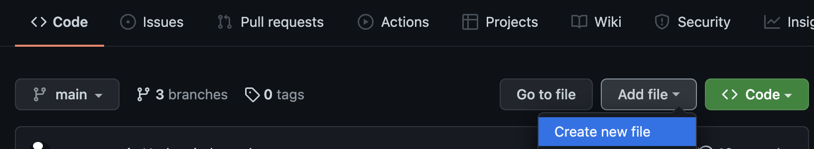
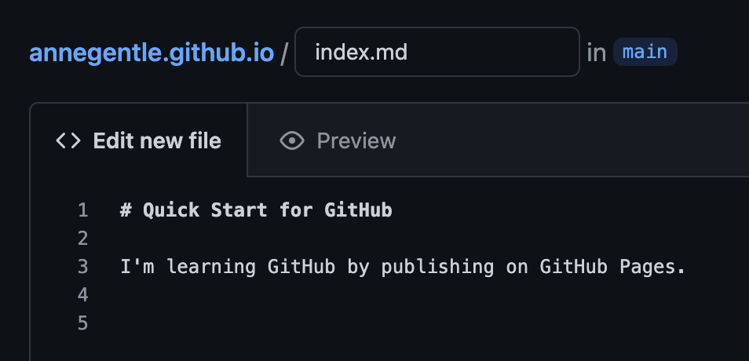
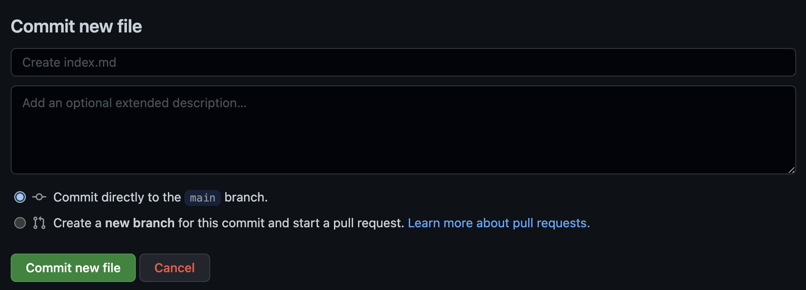
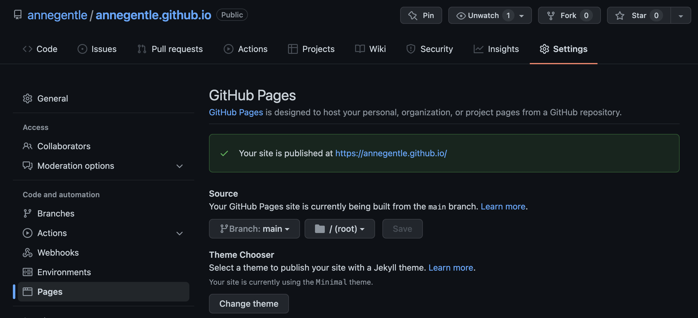

Experiment with Docs As Code with GitHub Pages
The fastest way to get started with docs-as-code with a web browser, internet connection, and GitHub account:
- Create a GitHub account at github.com. Refer to GitHub Pro Account or GitHub Free Account for Technical Writing if you're wondering which pricing plan makes sense for you. Free is likely fine!
- In your browser, create a repository with the same name as your GitHub username, followed by "github.io".
For example, my repository name is "annegentle.github.io".
- On the repository's main page, on the Code tab, click Add file > Create new file.

- In the Name your file... field, enter "index.md" and under Edit new file, add a line or two of text that you want to publish as your new web landing page.

- Add a message if you like, and click Commit new file.

- Wait just a few seconds, then go to your new page, https://username.github.io. For an example, go to annegentle.github.io.
- If you don't see a page, check the settings for GitHub Pages by going to the Settings tab for the repository, and then click Pages in the left-hand side. The Settings should look similar to these:

- Go to pages.github.com for even more scenarios.
That exercise gives you a taste of using GitHub as a content management system and publishing to a single web page automatically by pushing to a branch. Learn more by exploring the rest of this site.
Start Here
🚀 Quick Start Guide
Build your first docs-as-code workflow in under 30 minutes.
👉 /guides/quickstart/
📘 Docs Like Code (Book)
Learn the complete system for scaling documentation across teams.
👉 /book/
Core Topics
GitHub for Documentation
Learn how to use repositories, pull requests, and workflows to manage docs.
👉 /guides/github-docs/
Markdown for Technical Writers
Write clean, structured, and maintainable documentation.
👉 /guides/markdown/
Static Site Generators
Compare tools like Jekyll, Hugo, and Sphinx for publishing documentation.
👉 /guides/static-site-generators/
Why Docs as Code Works
Traditional documentation:
- Lives in disconnected tools
- Is hard to maintain
- Lacks collaboration
Docs-as-code workflows:
- Integrate with development
- Improve consistency
- Enable automation
- Scale with your team
Who This Site Is For
- Technical writers working with developers
- Developer advocates and API doc writers
- Engineering teams improving documentation
- Anyone adopting docs-as-code workflows
From the Author
This site accompanies Docs Like Code, a book focused on modern documentation workflows using developer tools and automation.
You’ll find practical guides, examples, and strategies for implementing docs-as-code in real teams.
👉 [Learn more about the book](/book/)
---
## Latest Guides
{% assign recent_guides = site.guides | slice: 0, 3 %}
{% for post in recent_guides %}
### [{{ post.title }}]({{ post.url }})
{{ post.excerpt }}
{% endfor %}
---
## Start Building Better Documentation
If you're ready to modernize your documentation workflow:
👉 [Start with the Quick Start Guide](/guides/quickstart/)
👉 [Get the full book](/book/)